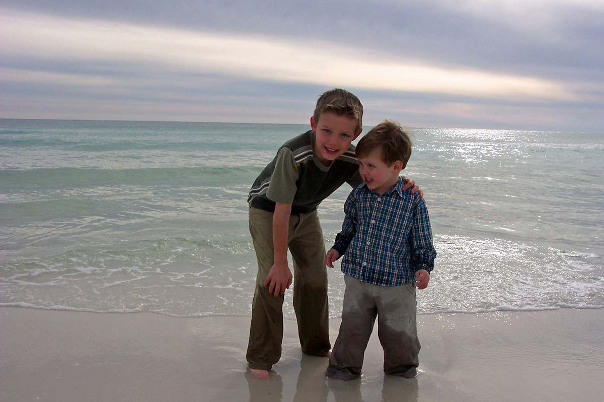

Nine Lives
Lesson 4 of Ashton's life lessons is Save One Life. Ashton saved nine.
When GOD took Ashton home on June 13, 2015, Ashton's organs saved 9 lives immediately. Perhaps over 100 more people were helped through skin grafts and bone marrow. Nine families got more time with someone they love because of our son. We will never know most of their names, but we think about them, and we thank GOD for every day Ashton gave them. Ashton was still getting busy living, even in death.
This was no accident of paperwork. Ashton had already shown us his heart — he wanted to donate a kidney to his aunt while he was still with us. Giving was simply who he was.
You can do what Ashton did. It costs nothing, it takes a few minutes, and one day it may mean everything to a family like ours. You can register with a checkmark the next time you renew your driver's license, or you can do it online today:
If Ashton's story leads even one person to register, his lessons are still being taught. Save one life.
May GOD bless you and keep you.